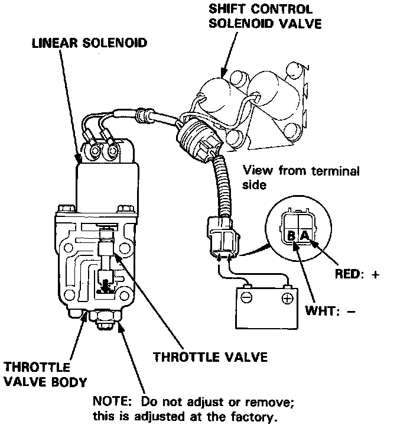
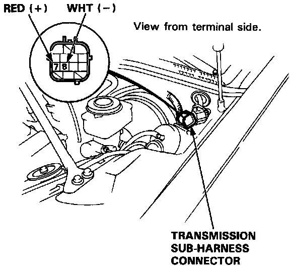
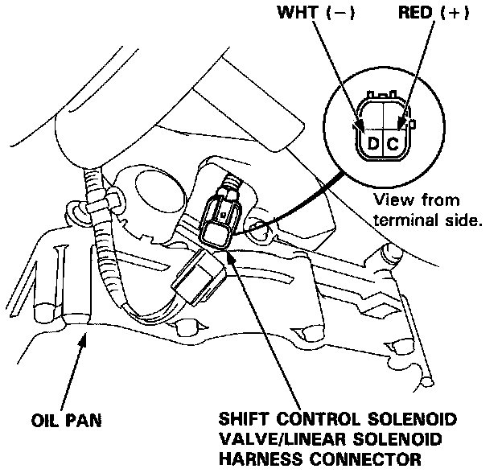

Throttle Valve Body/Linear Solenoid


Throttle Valve Body/Linear Solenoid
Test
1. Connect the A (RED: +) terminal of the shift control solenoid valve/linear solenoid harness connector to the battery positive terminal and the B (WHT: -) terminal to the battery negative terminal. Check that the throttle valve moves.
2. Disconnect the battery terminals and check that the throttle valve is released.
3. Repeat the above steps 1-2.
NOTE: You can see the movement of the throttle valve through the oil passage in the attaching surface of the throttle valve body.
4. If the throttle valve binds, or moves sluggishly, or the linear solenoid does not operate, replace the throttle valve body/linear solenoid as an assembly.
5. If the linear solenoid does not operate, disconnect the linear solenoid harness from the linear solenoid assembly. Connect the battery terminals directly to the linear solenoid.
6. If the linear solenoid operates after connecting the battery, and the throttle valve movement is OK, replace the shift control solenoid valve assembly.
Resistance Test
1. Disconnect the transmission sub-harness connector.

2. Measure the resistance between the No.7 and No.8 terminals of the transmission sub-harness.
STANDARD: 5.0-5.6 ohms (at 7O°F, 20°C) or 4.8-5.4 ohms (at 70°F 20°C)
3. If the resistance is Out of specification, disconnect the transmission sub-harness from the shift control solenoid valve/linear solenoid harness connector.

4. Measure the resistance between the C and D terminals of the shift control solenoid valve/linear solenoid harness connector.
STANDARD: 5.0-5.6 ohms (at 70°F, 20°C) or 4.8-5.4 ohms (at 70°F, 20°C)
5. Replace the transmission sub-harness if the resistance is within specification.
6. Replace the linear solenoid if the resistance is out of specification.
7. Connect the C terminal of the shift control solenoid valve/linear solenoid harness connector to the battery positive terminal and connect the D terminal to the battery negative terminal. A clicking sound should be heard.
8. If not, replace the linear solenoid.